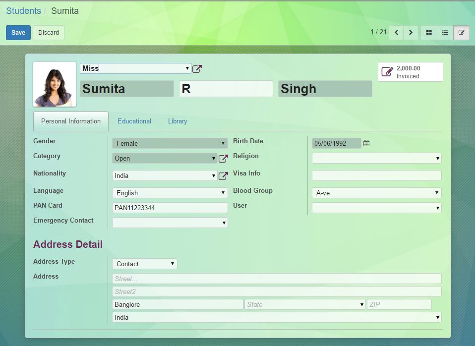
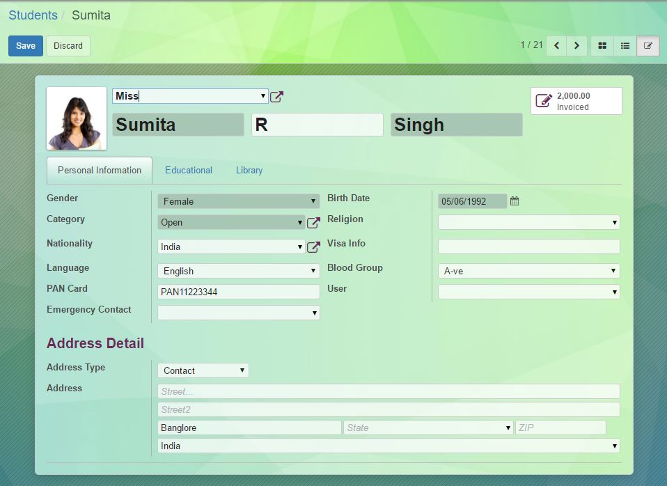
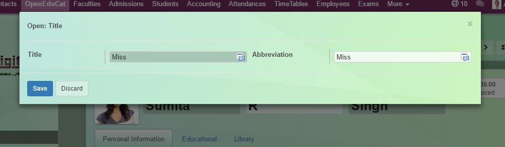
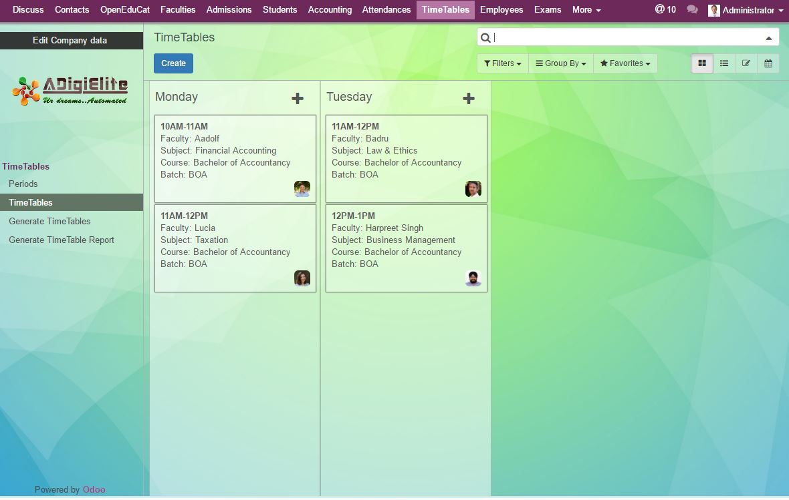

Elegant Form
The Form look and feel improved for elegant look.
Enhanced form controles

The form edit controls are changed as per the theme
The card view has been modified for best look and feel. This makes the user to enjoy the modern user interface design.
Enhanced form controles
The form edit controls are changed as per the theme
Transparent list has been introduced
The menu has been upgraded like the enterprise menu
The popup has been altered for good result
Kanban view has been modfied
you can use it on as many sites as you like, but you're not allowed to distribute it! Our friendly staff is available online and ready to help you by email. arun@adigielite.com